캠페인 메뉴 흐름과 사용 매뉴얼
작성일: 2026-09-29 · 대상: UCARE 상담프로그램 AS-IS(D:\MOBIS_DEV\MOBIS_asis), 로컬 localhost:9001 · 근거: 화면·JS·쿼리(campaign/question/outbound.xml)·저장 프로시저 추적 분석 + 교차 검증 + 브라우저 실측 캡처
0. 먼저 알아둘 것
캠페인은 아웃바운드(고객에게 먼저 거는 전화) 업무입니다. 흐름은 다음과 같습니다.
관리자 준비 : 고객 파일 양식(템플릿)을 정하고, 필요하면 설문을 만든 뒤, 캠페인을 등록합니다.대상 고객 : 고객을 등록하고 불량 행을 정리한 다음 상담원에게 나눠 줍니다(할당).상담원 발신 : 상담원이 상담메인의 아웃바운드(해피콜) 탭 에서 전화하고 결과와 설문 응답을 저장합니다.회수·분석 : 관리자가 미처리 고객을 회수해 다시 나누고, 아웃바운드결과 에서 성과를 봅니다.
메뉴 번호(2010, 2020 …)란? 앱 메뉴 테이블(
UC_COM_MNU)의
메뉴 ID 입니다. 화면 메뉴 바에는 이름만 보입니다.
앞 두 자리는 상단 메뉴입니다(20 = 캠페인, 10 = 고객상담). 뒤 두 자리는 하위 메뉴 순번입니다.
상담원이 실제로 전화하는 화면은 캠페인 메뉴가 아니라 1010 상담메인 안의 "아웃바운드(해피콜)" 탭입니다.
항목 내용 테스트 로그인 63829101(DEV). 관리자 메뉴를 모두 쓰면서, 캠페인 11·14~18의 담당 상담원 이기도 합니다. 그래서 아웃바운드 탭에 캠페인 6개가 보입니다.테스트 데이터
06(전화형) : 템플릿 12, 캠페인 24, 대상 815, 불량 20, OB 상담 47907(설문형) : 설문 문항 28, 설문지 6, 설문 캠페인 4(25~28), 대상 280, OB 상담 312, 응답 768 핵심 규칙 상담원 아웃바운드 탭에는 진행상태 "02" + 사용 Y + 그 상담원에게 할당된 고객이 있는 캠페인만 보입니다. 로컬 코드북에는 "02"가 없어 화면에서 만들 수 없는 값 입니다. 테스트 캠페인 11·14~22는 DB에 직접 넣었습니다.
테스트 데이터에서 누르지 말아야 할 버튼
2020 [필드적용], 필드 이동 ▲/▼ : 확인창 없이 바로 저장을 시도하고, 쿼리 오류로 실패합니다. 성공하더라도 화면 배치 설정이 지워집니다.2010 "02" 캠페인(11, 14~22)의 [저장] : 진행상태 콤보가 빈칸이라 다른 값을 골라야 하고, 저장하면 아웃바운드 탭에서 사라지며 되돌릴 수 없습니다.2010 상담원 ▶/◀ : 담당 상담원 목록 전체를 지웠다 다시 넣습니다. 배정 고객이 있는 상담원도 해제됩니다.2030 [수동할당실행]·[균등분배실행], 2050 [회수실행] : 할당 데이터가 실제로 바뀝니다.2040 [불량 DATA 삭제] : 해당 파일의 불량 행 전체를 물리 삭제합니다.1010 아웃바운드의 전화 아이콘, [S클레임 테스트] : CTI 발신, 외부 SOAP/AS400 연동입니다.1010 [저장], [콜백] 팝업의 [등록] : 식별 마커 없는 상담·예약 행이 생깁니다.
1. 한눈에 보는 캠페인 업무 흐름
가로줄은 누가 , 상자는 어느 메뉴 를 뜻합니다. 번호 순서대로 진행합니다. 점선은 되돌아가는 흐름(회수 후 재할당)과 시스템 자동 유입입니다.
캠페인관리자
설문관리자
아웃바운드 상담원
시스템(자동)
① 2020 파일템플릿 고객 파일 열 구성
③ 2010 캠페인 등록·담당 상담원
④ 2030 고객 등록 엑셀·VOC 추출
⑤ 2040 불량 정리 형식 오류 행 확인
⑥ 2030 할당 수동 / 균등분배
⑧ 2050 회수 미처리 고객 회수
⑨ 2090 결과 캠페인현황·고객별
② 2070 설문문항 문항·보기·점수
② 2080 설문지 문항 묶기·미리보기
⑨ 2090 설문 분석 빈도·만족도
⑦ 1010 아웃바운드 발신·결과·설문 저장
1015 캠페인이력 탭
자동 유입 외부 배치(유형 1·2) · 인바운드 자동등록(9·12·13·14)
설문형이면 설문지 먼저
할당된 고객
미처리·재배정
재할당
통화결과·응답
자동 유입
순서 단계 메뉴 누가 끝나면 무엇이 생기나 ① 파일 템플릿 정의 2020 파일템플릿관리 관리자 고객 파일의 열(ETC1~35) 구성·순서·필수여부. 아웃바운드 화면의 목록·상세 배치도 여기서 정합니다. ② 설문 준비(설문형만) 2070 설문문항관리 → 2080 설문지관리 설문관리자 문항·보기·점수, 문항을 묶은 설문지. 설문형 캠페인은 설문지가 있어야 저장됩니다. ③ 캠페인 등록 2010 캠페인관리 관리자 캠페인(기간·유형·실행방법·템플릿·설문지) + 담당 상담원 ④ 대상 고객 등록 2030 › 고객등록(Excel) / VOC고객추출 탭 관리자 시스템 고객 파일 → 대상 고객(미할당). 유형 1·2는 외부 배치, 유형 9·12·13·14는 인바운드 상담 저장 때 자동 등록 ⑤ 불량 정리 2040 불량데이타관리 관리자 형식 오류로 빠진 행의 사유 확인·삭제. 원본을 고쳐 새 파일로 재등록 ⑥ 상담원 할당 2030 › 고객할당 탭 관리자 대상 고객이 상담원에게 할당(할당·미처리) ⑦ 발신·결과 저장 1010 상담메인 › 아웃바운드(해피콜) 탭 상담원 통화 1건 = 접촉+상담(캠페인ID, 통화결과), 설문 응답. 최종 통화결과가 대상 고객에 기록 ⑧ 회수·재할당 2050 캠페인고객회수 → 2030 관리자 미처리 고객의 할당을 해제해 다른 상담원에게 다시 배분(성공 고객은 회수 불가) ⑨ 결과 분석 2090 아웃바운드결과(탭 4개) 관리자 설문관리자 설문 빈도·고객별 응답·캠페인 진행현황·만족도 점수(조회 전용)
2. 메뉴와 데이터 구성도
상자는 테이블, 괄호는 그 테이블을 쓰는 메뉴입니다. 캠페인 1건 → 고객 파일 → 대상 고객(원본값·진행상태·결과카운트 1:1:1) 이 뼈대입니다.
기준(템플릿·설문) 캠페인·파일 대상 고객(1:1:1) 통화·결과
UC_CAMP_FILE_TPL 파일 템플릿 헤더 (2020)
UC_CAMP_FILE_TPL_LIST 열(ETCn)·순서·필수·화면배치 (2020)
UC_SVY_INFO 설문지 (2080)
UC_SVY_ITM 설문지-문항 연결·순번 (2080)
UC_SVY_ITM_INFO · UC_SVY_EX_ITM 문항 · 보기·점수 (2070)
UC_CAMP_INFO 캠페인·상태·템플릿·설문지 (2010)
UC_CAMP_CHP 담당 상담원 (2010)
UC_CAMP_FILE 고객 DATA 파일·건수 (2030)
UC_CAMP_BAD_DATA 불량 행·사유 (2040)
UC_CAMP_DATA 고객 원본값 ETC1~35
UC_CAMP_LIST 할당·최종 통화결과 (2030·2050·1010)
UC_CAMP_OTBD_STAT_INFO 결과별 누적 카운트
UC_CONTACT 접촉(통화) 이력
UC_CONSULT 상담 1건 = 캠페인ID·통화결과 (1010)
UC_SVY_RSLT 설문 응답 (1010 → 2090)
EC_SCHEDULE 콜백 예약(캠페인과 연결 없음)
TPL_ID
SVY_ID
파일 소속
1:1
1:1
최종 상담번호
1:1
템플릿의 열 순서가 곧 엑셀 열 → ETCn 매핑 이고, 2030·2040·2050 그리드 열과 아웃바운드 탭의 목록·상세 칸 배치가 됩니다.
설문지는 문항을 복사하지 않고 연결 합니다. 한 문항을 여러 설문지가 함께 씁니다.
통화 1회는 UC_CONTACT + UC_CONSULT 한 쌍입니다. 대상 고객(UC_CAMP_LIST)에는 최종 통화결과와 최초·최종 상담번호만 남습니다.
결과 카운트 테이블(UC_CAMP_OTBD_STAT_INFO)은 쓰기만 하고, 이를 조회하는 화면은 없습니다.
3. 상태값 사전
로컬 코드북은 앞자리 0이 빠져 있습니다(예: 02가 2). 앱은 두 자리 코드를 가정하는 곳이 있어서 라벨 대신 코드가 보이거나 조건이 어긋납니다.
캠페인 진행상태 (UC_CAMP_INFO.CAMP_STTS_CD)
코드 의미 비고 1 / 2 / 3 / 4 대기 / 실행 / 중지 / 종료 2010 콤보로 선택합니다. 날짜가 지나도 자동으로 바뀌지 않습니다. 02 아웃바운드 실행 코드북 밖 값입니다. 상담원 아웃바운드 탭에 나오는 유일한 값 이고, 목록에는 "02"로 보입니다. 화면으로는 만들 수 없습니다.
대상 고객 상태 (UC_CAMP_LIST)
상태 판정 어떻게 바뀌나 미할당 할당일·상담원 없음 파일 등록(SP), VOC 추출, 외부 배치로 생성 할당·미처리(잔여) 상담원 있음, 최종 통화결과 없음 2030 수동할당/균등분배, 인바운드 자동등록(즉시 할당) 할당·처리(사용) 최종 통화결과 있음(부재 2, 비협조 4, 처리불가 5, 캠페인 7 등) 1010 아웃바운드 [저장]. 다시 저장하면 최종값을 덮어씁니다(재통화). 성공 최종 통화결과 1 2050 회수 불가(화면에서만 막음) 회수됨 할당 해제, 결과는 남음 2050 [회수실행] → 2030에서 재할당
통화결과 (CST017 → UC_CONSULT.TEL_RSLT_CD, UC_CAMP_LIST.LST_TEL_RSLT_CD)
코드 의미 저장 조건 1 성공 / 4 비협조 / 9 멀티미디어해피콜 / 0 미처리 CTI 발신으로 접촉이력이 있어야 저장됩니다(로컬에서는 저장 불가). 2 부재 / 5 처리불가 / 7 캠페인 CTI 없이 저장됩니다(접촉이력을 직접 생성). 3 결번 / 6 재통화 / 8 전화번호없음 사용 N 콤보에 나오지 않습니다.
결과 카운트(UC_CAMP_OTBD_STAT_INFO)는 결과 0~6만 +1됩니다. 7·9로 저장하면 통화일시만 갱신됩니다.
설문
대상 상태 의미 설문지 (UC_SVY_INFO) 미실행 / 실행 / 삭제(N) 연결 캠페인이 있으면 "실행"이 됩니다. 실행 중에는 설문지 삭제·문제추가·문항 삭제가 막힙니다. 고치려면 [설문복사]로 사본을 만듭니다. 문항 (UC_SVY_ITM_INFO) 사용유무 N / Y 응답이 한 건이라도 있으면 Y입니다. Y면 문항 삭제와 보기 등록·수정·삭제가 막힙니다(문항 문구 수정은 가능). 답안형식 (SVY002) 1 단답 / 2 다답 / 3 서술 JS는 "01/02/03"과 비교합니다. 그래서 서술형이 체크박스로 그려지고, 다답형도 1개만 고를 수 있습니다.
4. 화면별 사용법
캡처는 2026-09-29에 테스트 데이터로 찍었습니다. 이미지를 누르면 크게 볼 수 있습니다. 화면 순서는 업무 흐름 순서입니다.
① 2020 파일템플릿관리 캠페인관리자
무엇을 : 캠페인 고객 파일(엑셀)의 열 구성을 정합니다. 필드코드 ETC1~ETC35 중 쓸 것을 고르고 순서·필수여부·데이터유형을 지정합니다. 이 순서가 엑셀 열 매핑이 되고, 아웃바운드 화면의 목록 열과 상세 칸 배치도 여기서 정합니다([리스트설정]·[상세정보설정] 팝업).
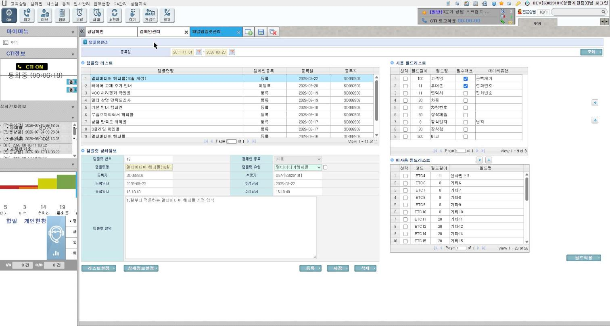
왼쪽은 템플릿 목록과 상세정보, 오른쪽은 사용 필드(순서·필수·데이터유형)와 미사용 필드입니다. 고객명과 전화번호 1~3은 고정 필드라 이름을 바꿀 수 없습니다. 사용 순서
[등록] → 템플릿명, 템플릿 유형, 설명 → [저장]
미사용 필드를 체크하고 ▲ → 사용 필드로 이동합니다(이동과 동시에 저장을 시도).
사용 필드의 이름·필수·데이터유형을 고치고 순서를 ▲▼로 바꾼 뒤 [필드적용]
[리스트설정]: 아웃바운드 대상 목록 열 순서, [상세정보설정]: 아웃바운드 상세 칸 배치
테스트 데이터로 확인
템플릿 11건(12건 중 상시모니터링 유형 1건은 숨김). 맨 위 "멀티미디어 해피콜(10월 개정)" → 사용 필드 9, 미사용 26 주의
[필드적용]과 필드 이동 ▲/▼는 동작하지 않습니다. 쿼리가 다른 테이블(설문 보기)의 없는 컬럼을 갱신하려다 오류가 나서 전체가 롤백됩니다. 확인창도 없으니 테스트 데이터에서는 누르지 마세요.캠페인에 연결된 템플릿은 헤더 수정·삭제가 막힙니다. 템플릿 10(VOC)은 VOC 추출 프로시저가 번호로 고정해 쓰므로 바꾸면 안 됩니다.
저장은 보안 필터를 거칩니다. 이름의 괄호는 HTML 코드로 바뀌고, "or ", "and "가 들어 있으면 저장이 실패합니다.
② 2070 설문문항관리 설문관리자
무엇을 : 설문에 쓸 문항(문제은행)과 보기·점수를 등록합니다. 답안형식은 단답형, 다답형, 서술형입니다.
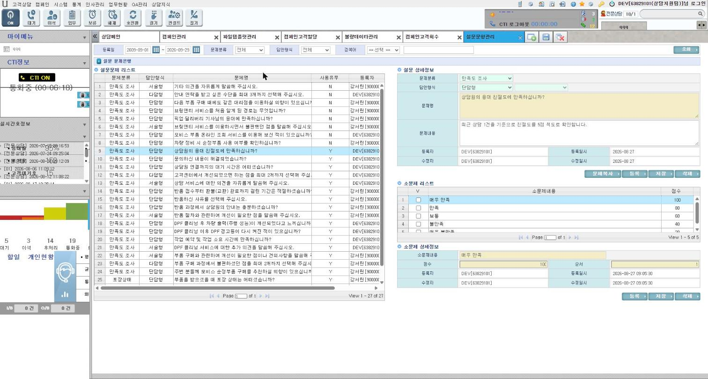
왼쪽은 문항 목록(문제분류, 답안형식, 사용유무), 오른쪽은 문항 상세와 보기(소문제) 목록입니다. "상담원의 응대 친절도" 문항에는 보기 5개(100/80/60/40/20점)가 있습니다. 사용 순서
[등록] → 문제분류, 답안형식, 답안갯수, 문제명·내용 → [저장]
문항 선택 → 소문제(보기) [등록] → 보기 내용, 점수, 순서 → [저장]
응답이 있는 문항을 고치려면 [문제복사]로 사본을 만들어 고칩니다.
테스트 데이터로 확인
문항 27건(삭제 표시 1건 제외). 단답형 문항 클릭 → 보기 5개와 점수 주의 : 사용유무 Y(응답 있음)인 문항은 문항 삭제와 보기 편집이 막힙니다. 적재 문항을 [저장]하면 답안갯수가 빈값으로 바뀔 수 있으니, 시험은 사본에서 하세요.
② 2080 설문지관리 설문관리자
무엇을 : 문항을 골라 설문지를 만들고 순서를 정합니다. [테스트]로 상담원이 보게 될 모양을 미리 봅니다.
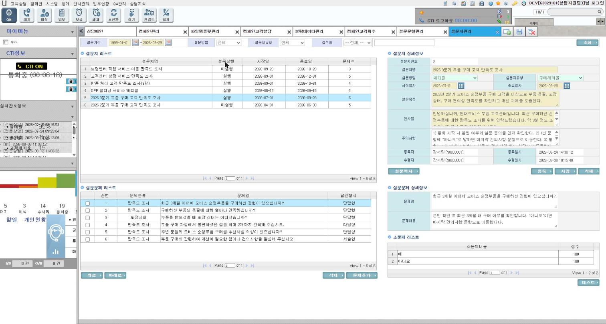
설문지 목록(설문실행, 기간, 문제수)과 상세(설문방법, 유형, 목적, 인사말, 주의사항). 아래는 설문문제 목록과 선택한 문제의 보기입니다. 사용 순서
[등록] → 설문지명, 설문방법, 설문지유형, 기간, 목적, 인사말, 주의사항 → [저장]
[문제추가] 팝업에서 문항 선택(서술형은 코드 불일치로 목록에 나오지 않음)
[테스트]로 미리보기 → 2010에서 실행방법 "설문" 캠페인에 연결
테스트 데이터로 확인
설문지 6건(실행 4, 미실행 2). "2026 3분기 부품 구매 고객 만족도 조사" → 문제 6개 주의
캠페인에 연결되면 "실행"이 되어 삭제·문제추가·문항 삭제가 막힙니다. 이름과 기간은 바꿀 수 있지만, 그러면 2090의 과거 결과 표시도 바뀝니다.
[위로]/[아래로]는 저장되지 않습니다.
분기(예: "아니오"면 마지막 문항으로) 기능은 테이블만 있고, 여는 버튼이 없으며 실행에도 반영되지 않습니다.
③ 2010 캠페인관리 캠페인관리자
무엇을 : 캠페인을 등록하고 담당 상담원을 지정합니다. 캠페인에는 기간, 유형, 실행방법(전화/설문/평가), 파일템플릿, 설문지(설문형), 사용여부, 진행상태가 있습니다.
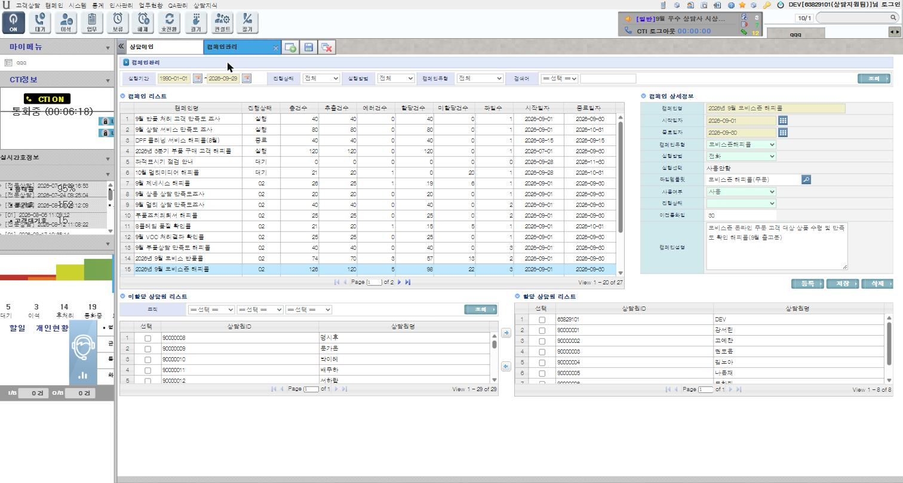
위쪽은 캠페인 목록(진행상태, 총건수, 추출·에러·할당·미할당 건수, 파일수)과 상세정보, 아래쪽은 미할당 상담원과 할당 상담원입니다. 진행상태 "02"가 코드 그대로 보입니다. 사용 순서
(설문형이면 먼저 2070·2080에서 설문지를 준비)
[등록] → 캠페인명, 기간, 유형, 실행방법, 파일템플릿(필수, 돋보기), 설문지(설문형 필수, 돋보기), 사용여부, 진행상태 → [저장]
미할당 상담원을 체크하고 ▶ → 할당 상담원으로 이동(담당 상담원 = 할당 후보)
종료: 진행상태 "종료"로 [저장]. 삭제는 할당 0·파일 0일 때만 됩니다.
테스트 데이터로 확인
27건(06 23 + 07 4). "2026년 9월 모비스존 해피콜" → 총 126, 에러 5, 할당 98, 미할당 22, 파일 3. 할당 상담원 8명(DEV 포함) 주의
"02" 캠페인은 [저장]하지 마세요. 콤보가 빈칸이라 다른 값을 골라야 하고, 저장하면 아웃바운드 탭에서 사라지며 되돌릴 수 없습니다.▶/◀는 담당 상담원 전체를 지우고 다시 넣습니다. 배정 고객이 있는 상담원을 해제하면 그 고객은 2030·2050에서 회수할 수 없는 상태가 됩니다.
캠페인 삭제 프로시저는 고객 파일 행은 지우지 않습니다(고아로 남음).
④⑥ 2030 캠페인고객할당 캠페인관리자
무엇을 : 대상 고객을 등록하고(고객등록(Excel) 탭, VOC고객추출 탭) 상담원에게 할당합니다(고객할당 탭).
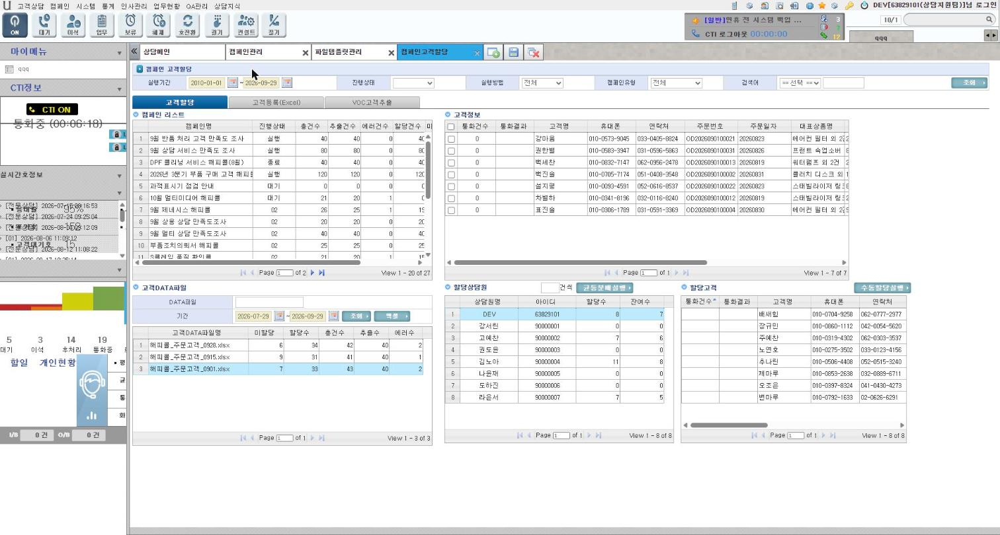
고객할당 탭: 캠페인 → 고객DATA파일 → 오른쪽 고객정보(미할당 고객), 할당상담원(할당수·잔여수), 할당고객. [균등분배실행]과 [수동할당실행]이 있습니다. 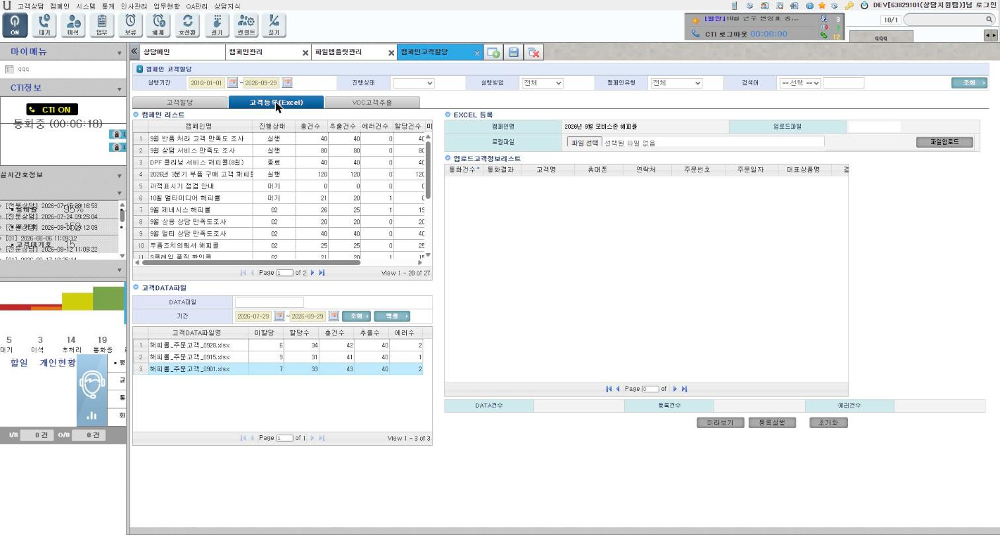
고객등록(Excel) 탭: 파일 선택 → [파일업로드] → [미리보기] → [등록실행]. 로컬에서는 업로드까지만 동작합니다. 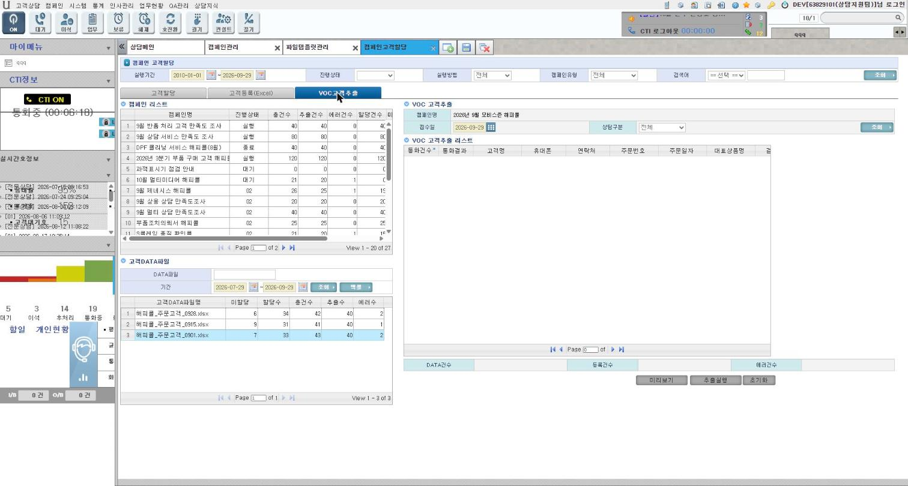
VOC고객추출 탭: 접수일과 상담구분으로 VOC 문서 고객을 추출해 대상으로 넣습니다. 현재 JS 오류로 동작하지 않습니다. 사용 순서
등록 : 캠페인 선택 → 고객등록(Excel) 탭 → 템플릿 열 순서에 맞춘 파일 → [파일업로드] → [미리보기] → [등록실행]. 형식 오류 행은 불량으로 빠집니다(2040).할당 : 고객할당 탭 → 캠페인 → 파일 → 상담원 클릭(버튼 활성화)
수동: 미할당 고객 체크 → [수동할당실행] 균등분배: "N건씩" 입력 → [균등분배실행]. 담당 상담원 전원 에게 N건씩 차례로 줍니다(클릭한 상담원과 무관, 무작위 아님).
테스트 데이터로 확인
"2026년 9월 모비스존 해피콜" → 파일 3개(0901/0915/0928) → 0901 파일 미할당 7, 할당 상담원 8명(DEV 8건) 주의
[미리보기]·[등록실행]은 서버 액션이 없어 동작하지 않습니다. [파일업로드]는 서버 디스크에 파일을 만듭니다.
유형 1·2(모비스존해피콜·반품콜)는 외부 배치가 넣는 구조라 등록 버튼이 모두 비활성입니다.
수동할당에는 "미할당" 조건이 없어서, 오래된 화면으로 할당하면 이미 할당된 고객을 덮어씁니다. 균등분배의 오류는 화면에 나오지 않습니다.
⑤ 2040 불량데이타관리 캠페인관리자
무엇을 : 고객 파일 등록 때 형식 오류로 빠진 행과 사유를 확인하고 정리합니다. 수정해서 다시 넣는 기능은 없으니, 원본을 고쳐 새 파일로 재등록합니다.
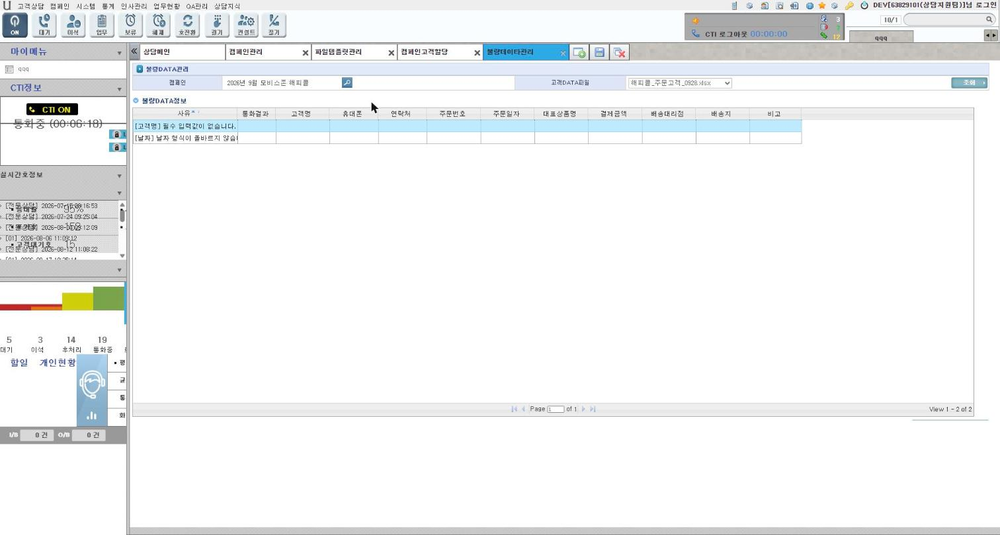
캠페인(돋보기) → 고객DATA파일 → [조회]. 0928 파일의 불량 2건: "[고객명] 필수 입력값이 없습니다", "[날짜] 날짜 형식이 올바르지 않습니다" 테스트 데이터로 확인
9월 모비스존 해피콜: 0901 파일 2건(전화번호 필수·형식), 0928 파일 2건(고객명 필수, 날짜 형식) 주의 : 그리드에는 사유만 나오고 원본 값 열은 빈칸입니다(화면 결함). [불량 DATA 삭제]는 해당 파일 불량 전체를 물리 삭제하며, 파일의 에러건수는 그대로 남습니다.
⑦ 1010 상담메인 › 아웃바운드(해피콜) 탭 상담원
무엇을 : 상담원이 할당받은 캠페인 고객에게 전화하고 결과를 저장합니다. 캠페인 메뉴가 아니라 상담메인 상단의 두 번째 탭 입니다.
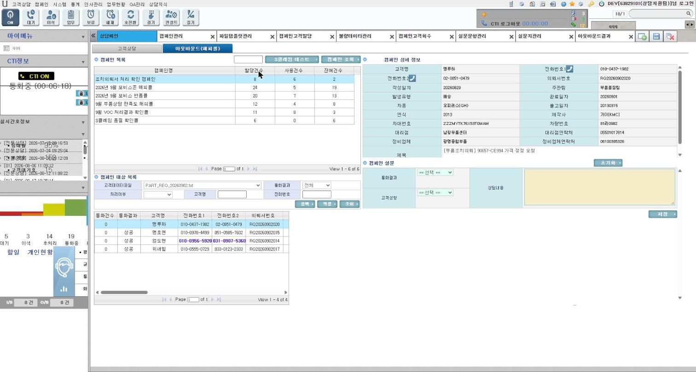
왼쪽 위는 내 캠페인 목록(할당·사용·잔여), 아래는 대상 목록(파일, 통화결과, 처리여부 필터)입니다. 오른쪽은 캠페인 상세정보(템플릿의 상세 배치)와 통화결과·고객성향·상담내용 입력, [저장]입니다. 사용 순서
상담메인 → 아웃바운드(해피콜) 탭(처음 누를 때 로드)
캠페인 클릭 → 최신 파일이 자동 선택되고 대상 목록이 나옵니다.
대상 고객 클릭 → 상세정보 확인(유형에 따라 주문·반품·VOC 상세가 함께 표시) → 전화 아이콘으로 CTI 발신
통화결과(필수), 고객성향, 상담내용(필수), 설문 응답(설문형) → [저장]. 성공이면 모든 문항에 답해야 합니다.
재통화가 필요하면 [콜백] → 팝업 [등록]으로 개인 예약(캠페인과는 연결되지 않음)
고객의 과거 캠페인 통화는 고객상담 탭 하단 1015 캠페인이력 에서 봅니다.
테스트 데이터로 확인
DEV 캠페인 6개: 조치의뢰서 처리 확인(8/6/2), 9월 모비스존 해피콜(24/5/19), 9월 모비스 반품콜(20/7/13), 9월 부품상담 만족도 해피콜(12/4/8), 9월 VOC 처리결과 확인콜(11/8/3), S클레임 품질 확인콜(6/0/6) 주의
보이는 조건: 진행상태 "02" + 사용 Y + 나에게 할당된 고객 . 담당 상담원(2010)으로만 지정돼 있고 할당이 없으면 보이지 않습니다.
로컬에는 CTI가 없어서 성공·비협조로는 저장할 수 없습니다(부재·처리불가·캠페인만 가능). 접촉이력 조회 코드에 오타가 있어, 경우에 따라 알림 없이 멈추기도 합니다.
전화형 캠페인은 [저장] 후 완료 메시지와 다음 고객 자동 이동이 없습니다. [조회]를 다시 누르세요.
설문형 캠페인을 "부재"로 저장하면, 초기화된다는 알림과 달리 체크한 응답이 그대로 저장됩니다.
"처리여부=미처리" 필터는 로컬 코드값 문제로 걸리지 않습니다. 처리된 고객도 목록에 함께 나옵니다.
"통화건수" 열은 항상 0입니다. 성공 행 잠금은 다시 조회하면 풀려서 중복 저장이 가능합니다.
전화 아이콘(CTI)과 [S클레임 테스트](외부 SOAP/AS400)는 누르지 마세요.
⑧ 2050 캠페인고객회수 캠페인관리자
무엇을 : 상담원에게 할당된 고객 중 미처리·부재 등을 회수(할당 해제)해 다른 상담원에게 다시 나눌 수 있게 합니다.
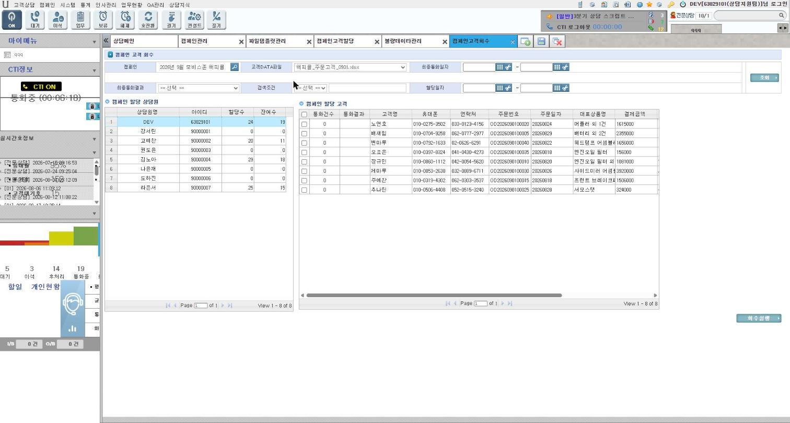
캠페인(돋보기) → 파일 → [조회] → 상담원 클릭 → 할당 고객 목록. 최종통화결과·최종통화일자·할당일자로 거를 수 있고, 체크 후 [회수실행]합니다. 사용 순서
캠페인 돋보기 → 고객DATA파일 → [조회] → 상담원 클릭
필요하면 최종통화결과(예: 미처리)로 거른 뒤 상담원을 다시 클릭
고객 체크 → [회수실행] → 2030에서 다른 상담원에게 할당
테스트 데이터로 확인
9월 모비스존 해피콜 0901 파일 → 상담원 8명(DEV 할당 24, 잔여 19) → DEV 클릭 → 할당 고객 8명 주의 : 회수는 할당만 지우고 최종 통화결과는 남깁니다. 그래서 다시 할당해도 아웃바운드 "미처리"로 찾을 수 없고, "전체"로 조회해야 합니다. 목록의 통화결과·통화건수 열은 표시 결함으로 비어 있거나 0입니다. 성공 고객 회수는 브라우저에서만 막습니다.
⑨ 2090 아웃바운드결과 캠페인관리자 설문관리자
무엇을 : 캠페인 성과를 봅니다(조회 전용). 탭은 4개입니다.
탭 선택 보여 주는 것 기본 기간 설문빈도분석 설문지 클릭 통화결과 요약(총·성공·처리불가·비협조), 문항별 보기 응답수·비율 결과기간 오늘-7일 고객DATA별 설문결과 캠페인(돋보기) → 파일 → [조회] → 고객 클릭 고객별 담당자·최종결과, 그 고객의 설문 응답 — 캠페인현황 캠페인(돋보기) 총발신·통화성공·부재·비협조·처리불가, 상담원별 현황과 비율 통화일자 오늘-31일(변경 불가) 고객만족도 설문지(돋보기) → [조회] 문제별·상담원별·문제별상담원 점수 조회기간 오늘-31일
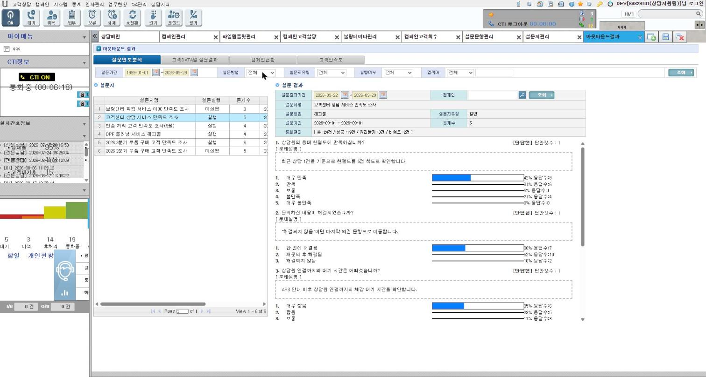
설문빈도분석: "고객센터 상담 서비스 만족도 조사", 결과기간 09-22~09-29 → 총 24건, 성공 19건, 처리불가 3건, 비협조 2건. 문항별 보기 응답 비율 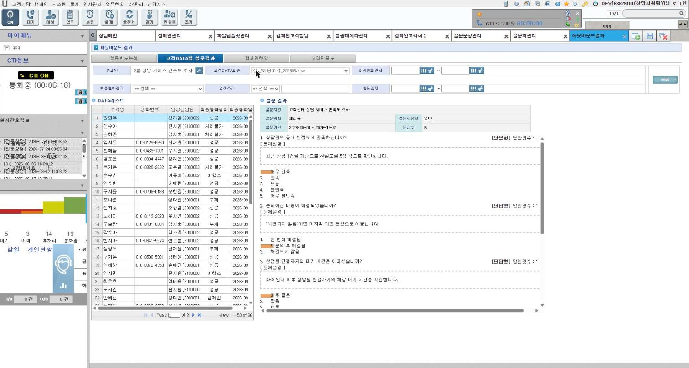
고객DATA별 설문결과: 캠페인 "9월 상담 서비스 만족도 조사" → 고객 66명(50행씩), 선택한 고객의 설문 응답 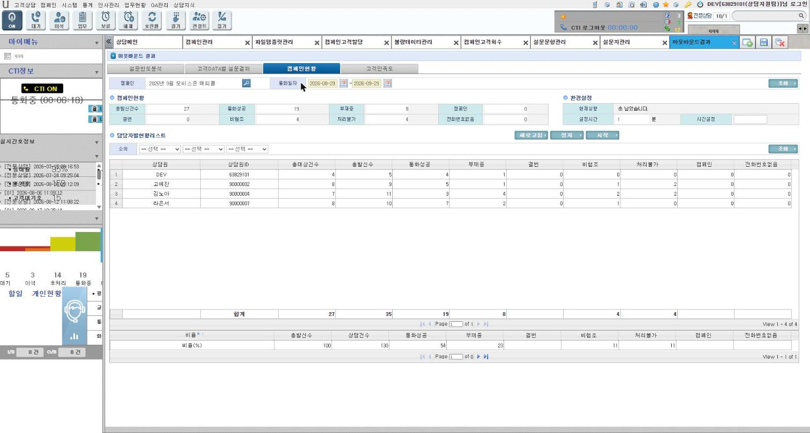
캠페인현황: "2026년 9월 모비스존 해피콜" → 총발신 27, 통화성공 19, 부재중 8, 비협조 4, 처리불가 4. 상담원별 현황과 비율 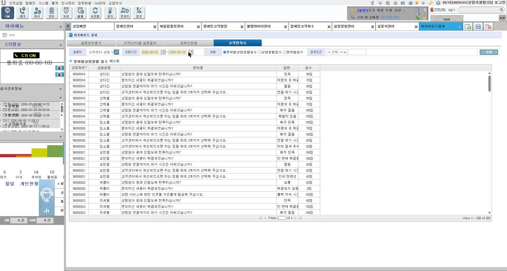
고객만족도: 설문지 "고객센터 상담 서비스 만족도 조사" → 문제별 상담원별 점수 202행 주의
설문 결과(고객DATA별, 고객만족도)는 설문형 캠페인(25~28) 에서만 나옵니다. 06 캠페인은 전화형이라 0건입니다.
기본 기간이 오늘 기준이라, 적재일(09-28)과 차이가 나면 숫자가 줄어듭니다.
설문빈도의 "총"은 성공+비협조+처리불가입니다. 캠페인현황 위쪽 "총발신건수"는 부재를 뺀 값으로 덮어써집니다.
점수가 없는 응답은 100점으로 계산됩니다. [시작]/[정지] 버튼은 자동 새로고침입니다.
5. 따라해 보기 (조회 위주)
# 메뉴 할 일 기대 결과 1 2020 메뉴를 연다 템플릿 11건, 첫 템플릿 사용 필드 9 2 2070 "상담원의 응대 친절도" 문항 클릭 보기 5개(100~20점) 3 2080 "2026 3분기 부품 구매 고객 만족도 조사" 클릭 문제 6개, 실행 상태 4 2010 "2026년 9월 모비스존 해피콜" 클릭([저장]은 누르지 않음) 총 126, 미할당 22, 파일 3, 할당 상담원 8 5 2030 같은 캠페인 → 0901 파일 클릭 미할당 7, 상담원 8명 6 2040 캠페인 돋보기 → 같은 캠페인 → 0928 파일 → [조회] 불량 2건(고객명·날짜) 7 1010 아웃바운드 상담메인 → 아웃바운드(해피콜) 탭 DEV 캠페인 6개 8 1010 아웃바운드 "2026년 9월 모비스존 해피콜" 클릭 → 대상 클릭 대상 목록, 주문 상세 패널 9 2050 같은 캠페인 → 0901 파일 → [조회] → DEV 클릭 할당 고객 8명 10 2090 설문빈도분석 "고객센터 상담 서비스 만족도 조사" 클릭 총 24건, 문항별 비율 11 2090 캠페인현황 캠페인 돋보기 → 9월 모비스존 해피콜 총발신 27, 성공 19, 상담원 4명 12 2090 고객만족도 설문지 돋보기 → 고객센터 상담 서비스 만족도 조사 → [조회] 202행
6. 자주 묻는 질문
질문 답 캠페인을 만들고 고객도 할당했는데 상담원 아웃바운드 탭에 안 보여요. 진행상태가 "02"여야 하는데, 코드북에 "02"가 없어 화면에서 만들 수 없습니다. "실행(2)"으로 저장해도 보이지 않습니다. 또 담당 상담원 지정만으로는 부족하고, 그 상담원에게 할당된 고객이 있어야 합니다. 2010 진행상태 콤보가 빈칸이고 목록에는 "02"가 보여요. 앱은 두 자리 코드, 로컬 코드북은 한 자리라서입니다. 목록은 없는 코드를 그대로 보여 줍니다. 설문형 캠페인이 저장되지 않아요. 실행방법 "설문"은 설문지가 필수입니다. 2070·2080에서 설문지를 먼저 만드세요. 엑셀 등록이 안 돼요. [미리보기]·[등록실행]의 서버 액션이 없습니다. 유형 1·2는 외부 배치로 들어오는 구조라 원래 비활성입니다. 검증은 적재 데이터로 합니다. 상담 중에 캠페인 대상이 저절로 생겨요. 인바운드 상담을 저장할 때 조건(개인정보 동의, 휴대폰 발신, 부품 문의 등)이 맞으면, 만족도 캠페인(유형 9·12·13·14)의 가장 최근 캠페인에 자동 등록되고 즉시 할당됩니다. 같은 상담에서 그룹웨어 전송이나 전문상담 이관을 하면 다시 삭제됩니다. 균등분배는 무작위인가요? 아닙니다. 담당 상담원 전원을 차례로 돌며 N건씩 채웁니다. 화면에서 클릭한 상담원과는 관계없습니다. 회수한 고객을 다시 할당했는데 상담원 목록에 안 나와요. 회수는 할당만 지우고 최종 통화결과를 남깁니다. 아웃바운드에서 처리여부를 "전체"로 조회하세요. 재통화는 어떻게 하나요? "재통화" 결과는 콤보에 없습니다. 같은 고객을 다시 조회해 저장하면 새 상담이 쌓이고 최종 결과가 바뀝니다. 예약이 필요하면 [콜백]을 씁니다. 2090 숫자가 설계 문서와 달라요. 기본 기간이 오늘 기준(7일·31일)이라서입니다. 적재일 2026-09-28 기준으로 기간을 바꿔 보세요.
7. 알려진 결함과 피해 가는 법
데이터로는 고칠 수 없는 소스 결함입니다(소스 수정 금지 원칙에 따라 기록만 함).
화면 증상 피해 가는 법 2020 [필드적용]·필드 이동 실패(다른 테이블의 없는 컬럼 갱신), 팝업 [적용] 시 마지막 행 누락 누르지 않음 2010 진행상태 "02"를 만들 수 없음, "02" 캠페인 저장 시 복구 불가, 상담원 해제 시 배정 고객 고아화 "02" 캠페인은 조회만 2030 엑셀 미리보기·등록 액션 없음, VOC 추출 JS 오류, 수동할당 덮어쓰기 적재 데이터로 확인 2040 사유 외 열 빈칸, 삭제해도 에러건수 유지 — 1010 아웃바운드 CTI 없이 성공 저장 불가, 전화형 저장 후 무반응, 설문형 부재 저장 시 응답 유지, 미처리 필터 무효, 통화건수 0, 성공 잠금 해제 저장 후 [조회] 재실행, "전체"로 조회 2050 통화결과·통화건수 표시 누락, 회수 후 결과 유지 — 2070·2080 답안형식 코드 불일치(서술형·다답형), 분기 미사용, 순서 이동 미저장 — 2090 기본 기간 고정·짧음, 총발신 덮어쓰기, 고객만족도 탭 초기 스크립트 오류 기간을 적재일 기준으로 조정
8. 테스트 데이터 되돌리기
캠페인 테스트 데이터는 검증데이터_적재\06_캠페인\(전화형)과 07_설문_OB결과\(설문형)에 있습니다. QA(08)가 06·07의 OB 상담을 평가콜로 참조할 수 있으므로 08 → 07 → 06 순서로 롤백한 뒤, 역순으로 다시 적재합니다.
cd D:\MOBIS_DEV\MOBIS_asis\검증데이터_적재
$env:UCARE_SA_PW = '<sa 암호>'
.\run.ps1 -SqlFile .\08_QA\99_rollback.sql
.\run.ps1 -SqlFile .\07_설문_OB결과\99_rollback.sql
.\run.ps1 -SqlFile .\06_캠페인\99_rollback.sql
.\run.ps1 -SqlFile .\06_캠페인\02_insert.sql
.\run.ps1 -SqlFile .\07_설문_OB결과\02_insert.sql
.\run.ps1 -SqlFile .\08_QA\02_insert.sql다음 항목은 롤백 스크립트로 정리되지 않으니 직접 지워야 합니다.
화면에서 새로 만든 템플릿·캠페인·설문(등록자 = 로그인 ID)
1010 [저장]으로 생긴 상담·접촉
[콜백] 예약
2030 [파일업로드]로 서버 디스크에 만든 파일
참고 경로
화면: view/jsp/campaign/*.jsp, view/jsp/question/*.jsp, view/jsp/customer/crsOutbound.jsp
쿼리: xml/query/campaign.xml, question.xml, outbound.xml
저장 프로시저 본문: D:\MOBIS_DEV\script.sql(SP_UC_CAMP_*, SP_UC_SVY_*)
테스트 데이터 설계: 검증데이터_적재/06_캠페인/설계.md, 07_설문_OB결과/설계.md
관련 노트: PLANS/NOTE/003 QA관리 메뉴 흐름과 사용 매뉴얼 20260929.html